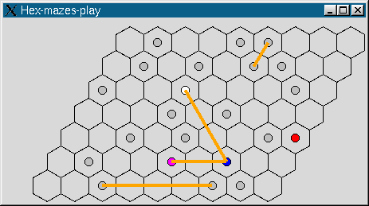

4.1. The Hex Swamps Conundrum
- When implementing the Hex planks in the swamp game, I encountered a situation where the first game I tried to solve was unsolvable by the solver.
- To solve it, I programmed a proto-game, that let me play the puzzle, and check each state I reached, whether it was also reached by the solver.
- I then discovered the problem (a moved plank was blocked by its origin state).
- Here's a screenshot of the game:
